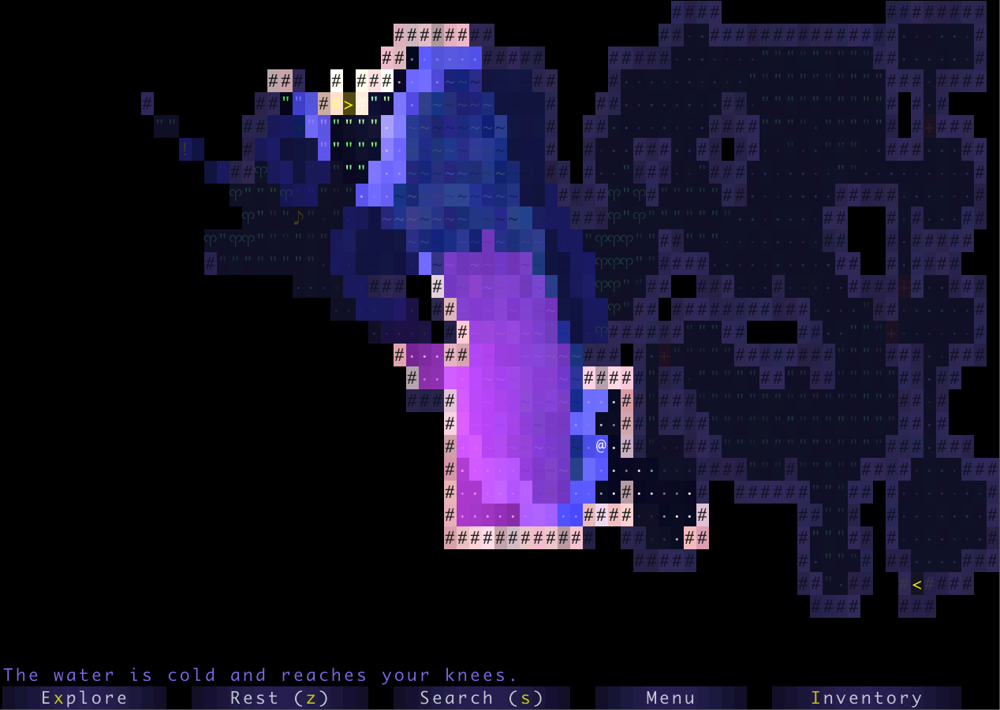

项目 3：BYOW
常见问题
每个作业顶部都会有一个常见问题（FAQ）链接。你也可以在 URL 末尾添加 "/faq" 来访问。项目 3 的常见问题位于 这里 。
介绍
在项目 3 中，你将创建一个用于生成可探索世界的引擎。这是一个大型设计项目，需要你和一位合作伙伴完成从构思到展示的每个开发阶段。本项目的目标是教你如何在起始代码很少的情况下处理较大的代码，以模拟类似产品开发周期的过程。与此相应，本项目的评分方式将与其他项目不同。由于世界设计和实现没有"正确答案"的概念，除了一个非常通用的自动评分器外，你的评估方式将类似于你在实习或工作中可能收到的绩效评估。虽然这意味着你的评分会有一定主观性，但我们保证会是很好的老板，并且会像任何老板尊重勤奋员工一样尊重你。如果你觉得评分方案不公平，请与我们交谈。
本项目需要你进行大量的探索和实验。在整个过程中，在网上搜索答案（不是过去学期的解决方案）应该是一项常规活动。请注意，没有绝对正确或错误的答案，因为这是一个非常开放的项目。然而，有些实现和想法比其他的更好。你会经历多次迭代才能确定你认为好的方案，这是正常的，也是预期的。也就是说，这个项目是关于 软件工程 的。
你不需要使用课堂上学到的任何高级数据结构或概念（A*、最小生成树、不相交集合等）。这个项目是关于软件工程的，而不是关于数据结构或算法的。我们在课堂上学到的数据结构和算法会让你的代码明显更简单、更高效，但请不要只是因为我们在课堂上学过就使用它们。只有当你觉得在实现中使用这些工具很舒服时才使用。
讨论本项目工作技巧的视频播放列表（来自 2018 年春季）可以在 此链接 找到。新框架代码的演练也可以在 这里 找到。
另请注意，由于项目结构已更改，第一阶段指的是项目的 3A 部分。
交付成果
项目 3 价值 125 分。本作业有几个关键截止日期：
-
组队（2 分）：截止日期 4/3 晚上 11:59
- 你必须提交 项目 3 合作伙伴表单 。你以后 不能 更换合作伙伴。在开始作业前，请阅读并理解 合作指南 。
- 当小组仓库发布时，你 必须接受你的 GitHub 邀请 ，否则邀请将在一周后过期。
- 项目 3A（19 分）：截止日期 4/15 晚上 11:59
-
项目 3B（9 分）：截止日期 4/22 晚上 11:59
- 交互性自动评分（9 分）：在 Gradescope 上提交
- 项目 3C（95 分）：截止日期 4/22 晚上 11:59
拓展功能演示将在项目 3BC 截止日期那一周的实验课期间进行现场展示。 所有组员必须准时到达，否则整个小组将受到 20% 的迟到扣分处罚。
请注意：除非有特殊原因，否则你不能晚提交项目 3B 和 3C 。我们没有与之前作业相同的延期政策，所以请尽早开始。
请注意，项目 3B 和 3C 在同一天截止。然而，由于你需要为"拓展功能"部分进行人工检查，我们设立了"交互性"和"拓展功能与演示"两个不同的评分环节。在你提交到 Gradescope 的 3B 代码中，也应该包含"拓展功能"，因为我们会在 3C 表单中要求你提供 3B 的 Gradescope 提交 ID。
你不能晚提交项目 3B 和 3C，因为它将在实验检查时由助教进行评分。 我们强烈不建议晚提交 3A 和配套实验（实验 9 和实验 10），因为项目 3B 和 3C 是在这些作业的基础上构建的，所以如果你晚提交这些作业，仍然按时完成项目 3B 的可能性很小。
现在让我们开始介绍作业规格！
概述
你接下来几周的任务是设计并实现一个基于 2D 图块的世界探索引擎。所谓"基于图块"，是指你生成的世界将由 2D 图块网格组成。所谓"世界探索引擎"，是指你的软件将构建一个世界，用户可以通过在世界中行走和与物体交互来探索。你的世界将采用俯视视角。作为一个比你将要构建的系统复杂得多的例子，NES 游戏《塞尔达传说 2》（有时）就是一个基于图块的世界探索引擎，恰好也是一款电子游戏：
（注：Zelda II 游戏截图（外部图片，原链接为 MobyGames，如无法加载请联系课程团队）。你构建的系统可以使用图形图块，也可以使用基于文本的图块。）
作为替代，你的系统也可以使用基于文本的图块，比如 下面展示的游戏 ：

我们将提供一个图块渲染器、一小套起始图块，以及一些必需方法的头文件，这些方法必须在你的世界引擎中实现，并且将被自动评分器使用。本项目有两个主要截止日期。在第一个截止日期前，你应该能够生成满足以下标准的随机世界。在第二个截止日期前，用户应该能够探索世界并与之交互。
本项目的主要目标是给你一个机会，尝试管理构建大型系统所带来的复杂性。警告：你构建的系统对用户来说可能不会那么有趣！三周时间实在不够，尤其是对于新手程序员来说。不过，我们确实希望你会觉得这是一个有成就感的项目，你生成的世界甚至可能会很美。
项目设置
本项目的设置与其他实验/项目不同。请不要跳过此步骤！
小组仓库设置
在项目的这一部分，你将只在小组仓库中工作。要在本地计算机上设置这个小组仓库，请按照以下说明操作（这些说明也在规格说明中）：
- 去你的邮箱，接受你应该收到的 GitHub 仓库邀请。请在收到邀请后立即接受，因为邀请将在 7 天内过期。如果你的邀请已过期，请在 Ed 上发帖。
- 登录 Beacon，然后点击"小组"选项卡。你应该在这里看到一个小组。
- 点击"在 GitHub 上查看仓库"链接。
- 你现在将被带到 GitHub 上你的新仓库。你会有一个空仓库。复制文本栏中显示的克隆链接（截图中已涂黑）。
我们建议使用
ssh而不是https进行克隆。下图使用的是https，这可能与实验 1 中的 Github 身份验证不太兼容。要切换，你应该点击ssh按钮并使用出现的链接。

-
打开一个新的终端窗口，导航到你存储 CS 61B 文件的目录（通常，学生有一个名为
cs61b的目录）。
重要提示：
不要 cd 进入你的
sp24-s****
仓库！你不应该将小组仓库克隆到你个人的 61b 仓库中。
- 在终端中输入以下命令，并在每个命令后按 Enter：
git clone <paste your link from GitHub here>
cd sp24-proj3-g*** // Replace the *** here with your group repo number
git remote add skeleton https://github.com/Berkeley-CS61B/proj3-skeleton-sp24.git
git pull skeleton main --allow-unrelated-histories
完成上述步骤后，你应该在本地文件中看到名为
sp24-proj3-g***
的新小组仓库，如果你打开这个仓库，你会看到
proj3
框架文件夹。从这里开始，你和你的伙伴可以正常进行，像往常一样从这个仓库添加、提交、推送和拉取。
框架代码
新框架代码的演练可以在 这里 找到。
在你的小组仓库中使用
git pull skeleton main
来拉取框架代码。框架代码包含你将使用的两个关键包：
TileEngine
、
Core
和
Utils
。
TileEngine
提供了一些基本的渲染方法，以及图块的基本代码结构，包含：
-
TERenderer.java- 包含渲染相关的方法。 -
TETile.java- 用于表示世界中图块的类型。 -
Tileset.java- 提供的图块库。
不要更改 TETile.java 的
character字段或character()方法，因为这可能导致自动评分结果不佳。此外，如果你添加新的地板或墙壁图块，请确保修改是BoundaryTile和是GroundTile，以便自动评分器识别你的图块。
另一个包
Core
包含与图块无关的所有内容。我们建议你将本项目的所有代码放在
Core
包中，尽管这不是必需的。
Core
包附带以下类：
-
AutograderBuddy.java- 提供两个与系统交互的方法。TETile[][] getWorldFromInput(String input)通过返回如果在键盘上输入字符串会产生的世界来模拟游戏而不渲染。你应该为自动评分器填写这个方法。 -
Main.java- 用户启动整个系统的方式。读取命令行参数并调用World.java中的适当函数。 -
World.java- 你的世界！
这是一个开放式项目。如你所见，我们只给了你一个名为
World.java
的文件，你可以在其中做创建世界所需的事情！本项目的目的是给你自由，让你可以用不同的设计选择创建自己的世界。如果你愿意，你可以创建任何其他类。首先，你可以使用
World.java
来实现世界创建背后的逻辑。
最后一个包
Utils
包含你实现
World.java
类可能需要的所有内容。
-
RandomUtils.java- 提供一些可能有用的函数。 -
FileUtils.java- 简单文件操作库。你可以在 这里 和 这里 找到相关的 API。一定要看看实验 9 来复习这是如何工作的。
本项目大量使用
StdDraw
，这是一个具有基本图形渲染功能的包。此外，它支持通过键盘和鼠标点击进行用户交互。在项目的某些阶段，你可能需要查阅
StdDraw
的 API 规范，可以在
这里
找到。
你的项目应该只使用标准 Java 库（从 java.* 导入）或我们随仓库和
library-sp24
提供的任何库。你 3B 和 3C 的最终提交不应使用框架中提供的库之外的任何外部库。
不要使用静态变量，除非它们有 final 关键字！2018 年，许多学生因为尝试使用静态变量而遇到了严重的调试问题。静态非 final 变量会给系统增加巨大的复杂性。此外，不要在
getWorldFromInput中调用System.exit()，因为这会导致自动评分器退出并失败。
3A：世界生成
如上所述，项目的第一个目标是编写一个世界生成器。你的世界必须是 有效的 和 足够随机的 。这些标准的要求如下：
有效性
- 世界必须是 2D 网格，使用我们的图块引擎绘制。图块引擎在 实验 9 中有描述。
- 生成的世界必须包含不同的房间和走廊，尽管也可以包含室外空间。
- 至少一些房间应该是矩形的，尽管你也可以支持其他形状。
- 你的世界生成器必须能够生成包含转弯的走廊（或者等效地，相交的直走廊）。随机世界应该以中等频率生成转弯走廊（20% 或更多的世界）。
- 不允许有死胡同走廊。
- 房间和走廊必须有与地板视觉上不同的墙壁。墙壁和地板应该与未使用的空间视觉上不同。
- 墙角是可选的。
- 房间和走廊应该相连，也就是说，相邻房间或走廊之间的地板不应有间隙。
- 所有房间都应该可以到达，也就是说，不应该有无法进入的房间。
- 房间不能超出世界边缘。换句话说，世界边缘不应该有地板图块。
- 世界不能有过多的未使用空间。虽然这个标准本质上是主观的，但目标是用房间和走廊填充世界的 50% 以上。
足够随机
- 世界必须是伪随机生成的。伪随机性在实验 9 中有讨论。
- 世界应该包含随机数量的房间和走廊。
- 房间和走廊的位置应该是随机的。
- 房间的宽度和高度应该是随机的。
- 走廊应该有 1 个图块的宽度和随机的长度。
- 每次的世界应该有很大不同，也就是说，你不应该有相同的基本布局和容易预测的特征。
作为满足所有这些要求的世界示例（点击查看更高分辨率），请参见下图。在这张图中，# 代表墙壁图块，点代表地板图块。所有未使用的空间都留空。
{kind=link}
完成实验 9 后，你就可以开始编写世界生成算法了。
你很可能最终会抛弃你的第一个世界生成算法。 这是正常的！在现实世界的系统中，在得到你满意的东西之前，构建几个全新的版本是很常见的。
欢迎你在网上搜索酷炫的世界生成算法。你不应该从现有的在线游戏或图形演示中复制粘贴代码，但你可以从网络上的代码中获取灵感。 请务必使用 @source 标签注明你的来源。 作为参考，你可以尝试玩现有的 2D 图块游戏。 Brogue 是一个特别优雅美丽的游戏例子。 Dwarf Fortress 是一个极其复杂、令人惊叹的复杂世界生成引擎的例子。
图块集和图块渲染
我们提供的图块渲染引擎接收一个
TETile
对象的 2D 数组并将其绘制到屏幕上。我们暂时称之为
TETile[][] world
。
world[0][0]
对应于世界的左下角图块。
第一个坐标是 x 坐标，例如
world[9][0]
指的是从左下角图块向右 9 个位置的图块。第二个坐标是 y 坐标，值随着我们向上移动而增加，例如
world[0][5]
是从左下角图块向上 5 个图块。所有值都应该是非空的，也就是说，在调用
renderFrame
之前确保全部填充。
确保你理解世界网格的方向！
如果你不确定，编写简短的示例程序在网格上绘制来加深你的理解。
如果你混淆了 x 和 y 或者上和下，你将会有一个非常混乱的调试时间。
我们在
Tileset.java
中提供了一小部分默认图块，这些应该作为如何创建
TETile
对象的好例子。我们强烈建议也添加你自己的图块。
图块引擎还支持图形图块！要使用图形图块，只需将图块的文件名作为
TETile
构造函数的第五个参数提供即可。图像必须是 16 x 16 的，理想情况下应该是 PNG 格式。网上有大量用于图块游戏的开源图块集。欢迎使用这些。
你创建的任何
TETile
对象都应该被赋予一个其他图块不使用的唯一字符。即使你使用自己的图像来渲染图块，每个
TETile
仍然应该有自己的字符表示。
如果你不提供文件名，或者文件无法打开，那么图块引擎将使用提供的 unicode 字符来代替。这意味着如果其他人没有在你指定的相同位置本地拥有图像文件，你的世界仍然会显示，但会使用 unicode 字符而不是你选择的纹理。
图块渲染引擎依赖于
StdDraw
。我们建议不要使用像
setXScale
或
setYScale
这样的
StdDraw
命令，除非你真的知道你在做什么，否则你可能会大大改变或破坏系统的
美感
。
启动你的程序
你的程序将通过运行
Main
类的
main
方法来启动。你会看到这个方法会渲染你的程序，并在将来为你提供交互性。除此之外，为了测试你的世界，对于 3A，你的项目必须支持
getWorldFromInput
。具体来说，你应该能够处理格式为
"N#######S"
的输入，其中每个 # 都是一个数字，并且可以有任意数量的
#
。这对应于请求一个新世界（
N
），提供一个种子（
#
），然后按
S
表示种子已完全输入。你在
Main
类中的世界生成和
getWorldFromInput
方法之间的逻辑应该是相似的。虽然你应该在
Main
中渲染你的程序，但你不应该在
getWorldFromInput
中这样做，因为这将用于自动评分器。
最后，我们建议你对
core.Main
类进行最小化的修改。将程序的所有工作委托给你将创建的其他类是一个更好的主意。
当你的
core.Main.main()
方法运行时，你的程序必须显示一个主菜单，该菜单至少提供开始新世界、加载先前保存的世界和退出的选项。主菜单应该可以通过键盘完全导航，使用 N 表示"新世界"，L 表示"加载世界"，Q 表示退出。如果你愿意，你可以包含额外的选项或导航方法。

在键盘上按 N 选择"新世界"后，应该提示用户输入一个"随机种子"，这是他们选择的一个 long 值。这个 long 数据类型将用于随机生成世界（如后面和实验 12 中所述）。UI 应该显示用户到目前为止输入的种子值。在用户按下种子中的最后一个数字后，他们应该按 S 告诉系统他们已经输入了想要的整个种子。你的世界生成器应该能够处理任何最大为 9,223,372,036,854,775,807 的正种子。对于大于此值的种子，没有定义的行为。
"加载"命令的行为在本规范的后面描述。
如果使用
core.AutograderBuddy.getWorldFromInput
调用系统，则不应显示菜单，也不应在屏幕上绘制任何内容。系统应该像人类用户使用
main()
方法按下给定的键一样处理给定的字符串。例如，如果我们调用
getWorldFromInput("N3412S")
，你的程序应该生成一个种子为 3412 的世界并返回生成的 2D 图块数组。
请注意，输入字符串中的字母可以是大写或小写，你的引擎应该能够接受任何一种按键（即"N"和"n"都应该启动世界生成过程）。
使用
getWorldFromInput
时，你
不应该
渲染任何图块或播放任何声音。
如果你想让用户有额外的选项，例如选择他们角色属性的能力、指定世界生成参数等，你应该创建额外的选项。例如，如果你希望用户能够选择扮演什么样的生物，你可以在主菜单中添加第四个选项"S"，用于"选择生物并创建新世界"。这些额外的选项可以有你选择的任意行为，但是，N、L 和 Q 的行为必须完全符合规范中的描述！
要求
对于 3A，你应该能够通过提供一个输入字符串来运行
Main.main
，并让你的程序创建一个符合上述要求以及下面
提交和评分
部分提到的随机性要求的世界。请注意，你应该通过编写自己的
main
方法来渲染世界以检查你的代码，但对于自动评分器，
getWorldFromInput
不应该渲染世界，只返回世界作为
TETile
数组。对于提供给程序的不同种子，世界应该在视觉上是不同的。
对于 3A，你不需要有主菜单屏幕。
设计文档
由于我们没有为项目 3 提供任何重要的框架代码，而且这个项目是非常开放式的，我们预计学生之间的 BYOW 实现会有很大差异。我们建议你有一个反映项目当前状态的设计文档。
在开始编写任何代码之前，请使用此处列出的指南为你的 BYOW 程序的每个功能创建一个计划，并让你自己相信你的设计是正确的。编写设计文档是一个迭代过程。在提出你的初始设计后，你可能会发现其中的一些缺陷，需要你重新审视你的设计并根据你的新发现更新其描述。
你可能会发现软件工程讲座有助于学习如何管理这个项目的复杂性和协作性质。
我们不会对这份文档进行评分，但你需要完成它才能在网上和办公时间获得帮助。
设计文档指南
设计文档的主要目的是作为你项目的基础。在编码之前思考和构思是很重要的。我们在设计文档中寻找的内容：
- 确定我们在课堂上学到的、你将在实现中使用的数据结构。
- 你的实现算法的伪代码/总体概述。
你可以使用以下格式来编写你的 BYOW 设计文档。你可以用自己的格式创建设计文档，或者使用 这个模板 。
设计文档部分
1. 类和数据结构
在此处包含任何类定义。对于每个类，列出实例变量（如果有的话）。包含每个变量的简要描述及其在类中的用途。
2. 算法
这是你描述代码如何工作的地方。对于每个类，包含该类中方法的高级描述。也就是说，不要包含代码的逐行分解，而是你会在方法上方的 javadoc 注释中写的东西，包括你正在考虑的任何边缘情况。
3. 持久性
你应该在完成 3A 之后再处理这一部分。这一部分应该描述你将如何保存世界的状态，并按照规范中的要求重新加载它。同样，尽量保持你的解释清晰简短。包含你的程序与之交互的所有组件——类、特定方法和你可能创建的文件。你可以查看 实验 9 。
3B：交互性
在项目的第二部分，你将添加用户与世界实际交互的能力，还将向你的世界添加用户界面（UI）元素，使其感觉更具沉浸感和信息量。
交互性要求如下：
- 用户必须能够控制某种可以使用 W、A、S 和 D 键移动的"化身"。所谓"化身"，我们只是指由用户控制的某种屏幕上的表示。例如，在我的项目中，我使用了一个可以移动的"@"。
- 化身必须能够以某种方式与世界交互。
-
你的系统必须是确定性的，即从相同种子出发的相同按键序列每次都必须导致完全相同的行为。请注意，
Random对象保证每次都输出相同的随机数。 -
为了支持保存和加载，你的程序需要在你的
proj3目录中创建一些文件（更多细节请参见规范后面和框架代码）。你可以创建的唯一文件必须具有后缀".txt"（例如"save-file.txt"）。如果你不这样做，你会遇到自动评分器的问题。
可选地，你还可以包含允许用户获胜或失败的游戏机制。除了这些功能要求外，你的系统还有一些技术要求，下面将更详细地描述。
UI（用户界面）外观
用户输入种子并按 S 后，应该显示带有用户界面的世界。你项目的用户界面必须包括：
- 显示世界当前状态的 2D 图块网格。
- 一个"抬头显示器"（HUD），提供可能对用户有用的额外信息。最起码，这应该包括描述当前鼠标指针下图块的文本。 这不应该闪烁，如果闪烁你将无法获得分数。
作为最低要求的示例，下面的简单界面显示了一个图块网格和一个 HUD，HUD 显示了鼠标指针下图块的描述（点击图片查看更高分辨率）：

如果你愿意，你可以包含额外的功能。在下面的示例中（点击图片查看更高分辨率），与前面的示例一样，鼠标光标当前在墙上，因此 HUD 在右上角显示文本"墙"。然而，这个 HUD 还为用户提供了 5 颗心，代表化身的"生命值"。请注意，这个世界不符合上述规范的要求，因为它是一个大的不规则洞穴空间，而不是由走廊连接的房间。

例如，下面的游戏（点击图片查看更高分辨率）使用 GUI 列出额外的有效按键，并在用户将鼠标悬停在图块上时提供更详细的信息（"你看到草状真菌。"）。下面显示的图片是一个专业游戏，所以我们不期望你的项目有这种程度的细节（但我们鼓励你尝试！）。
（注：此示例图片在原网站中不可用，请访问 原始课程页面 查看。）
有关如何指定 HUD 位置的信息，请参阅
TERenderer
的
initialize(int width, int height, int xOffset, int yOffset)
方法或参见实验 9。
UI 行为
世界生成后，用户必须控制显示在世界中的某种化身。用户必须能够分别使用
W
、
A
、
S
和
D
键向上、向左、向下和向右移动。这些键也可以做额外的事情，例如推动物体。你可以在引擎中包含额外的键。当试图移动到墙中时，化身不应该移动，程序也不应该出错。
系统必须表现为伪随机。也就是说，给定一个特定的种子，相同的按键序列必须产生完全相同的结果！
除了移动键之外，如果用户输入
:Q
（注意冒号），程序应该退出并保存。保存（和加载）功能的描述在下一节中介绍。
此命令必须立即退出并保存
，并且不需要进一步的按键来完成，例如，在退出前不要问他们是否确定。我们将这种同时退出和保存的单一操作称为"退出/保存"。此命令不区分大小写，所以
:q
也应该有效。此外，
:
后面跟任何其他字母都不应该做任何事情。
本项目使用
StdDraw
来处理用户输入。这导致了几个重要的限制：
-
StdDraw不支持组合键。当我们说:Q时，我们的意思是:后跟Q。 - 它只能注册产生字符的按键。这意味着任何 unicode 字符都可以，但像方向键和 escape 这样的键将不起作用。
-
在某些计算机上，如果不进行一些重大修改，它可能不支持按住键；也就是说，你不能按住 e 键并持续向东移动。如果你能弄清楚如何以与
getWorldFromInput兼容的方式支持按住键，欢迎你这样做。
由于你的系统必须处理字符串输入（通过
getWorldFromInput
）的要求，你的引擎不能利用实时，也就是说，你的系统不能有任何依赖于现实生活中一定时间流逝的机制，因为这不会被捕获在输入字符串中，并且在使用该字符串与使用键盘提供输入时不会导致确定性行为。跟踪已经过去的回合数是一个完全合理的机制，并且可能是一个有趣的东西包含在你的世界中，例如，也许世界随着每一步逐渐变暗。欢迎你包含其他按键，比如允许用户按空格键来等待一回合。实时行为是为自动评分器准备的。对于 3C，可以随意忽略实时要求并修改你的代码。
保存和加载
有时候，你正在探索你的世界，你突然注意到是时候去看 CS 61B 讲座了。对于这样的时候，能够保存你的进度并在以后加载它是非常方便的。你的系统必须能够在探索时保存世界的状态，以及随后将世界加载到上次保存时的确切状态。
在一个运行的 Java 程序中，我们使用变量来存储和加载值。请记住，当你的程序结束时，所有变量都将超出范围。因此，你需要将程序的状态持久化到你的程序应该创建的一些文件上。
当用户重新启动
core.Main
并按
L
时，世界应该处于
与项目终止前完全相同的状态
。这个状态包括随机数生成器的状态！在下一节中会有更多关于这一点的内容。如果用户尝试加载但没有之前的保存，你的系统应该简单地退出，UI 界面应该关闭，不产生任何错误。
在基本要求中，命令
:Q
应该保存并完全终止程序。这意味着包含
:Q
的输入字符串后面不应该有任何更多的字符，加载世界需要重新运行程序，输入字符串以
L
开头。
与输入字符串交互
你的
getWorldFromInput(String input)
必须能够处理包含移动的输入字符串。
例如，字符串
N543SWWWWAA
对应用户创建一个种子为 543 的世界，然后向上移动四次，然后向左移动两次。如果我们调用
getWorldFromInput("N543SWWWWAA")
，你的系统将返回一个
TETile[][]
，表示世界完全像我们使用
main
并手动输入这些键时一样。由于系统在给定种子和输入字符串时必须是确定性的，这将允许用户精确重放给定输入序列发生的事情。这也将方便测试你的代码，以及我们的自动评分器。
getWorldFromInput(String s)
还必须能够处理重放字符串中的保存和加载，例如，
N25SDDWD:Q
将对应于使用种子 25 开始一个新世界，然后向右、向右、向上、向右移动，然后退出/保存。然后该方法将返回保存时的 2D
TETile[][]
数组。如果我们然后使用重放字符串
LDDDD
启动引擎，我们将重新加载刚刚保存的世界，向右移动四次，然后在第四次移动后返回 2D
TETile[][]
数组。
你的世界在保存之间不应该以任何方式改变
，也就是说，对于以下所有场景，最后一次调用
getWorldFromInput
应该返回完全相同的
TETile[][]
：
-
getWorldFromInput(N999SDDDWWWDDD) -
getWorldFromInput(N999SDDD:Q)，然后getWorldFromInput(LWWWDDD) -
getWorldFromInput(N999SDDD:Q)，然后getWorldFromInput(LWWW:Q)，然后getWorldFromInput(LDDD:Q) -
getWorldFromInput(N999SDDD:Q)，然后getWorldFromInput(L:Q)，然后getWorldFromInput(L:Q)，然后getWorldFromInput(LWWWDDD)
然后我们使用输入
L:Q
调用
getWorldFromInput
，我们期望保存并返回完全相同的世界状态作为
TETile[][]
，就像我们之前提供
LDDDD
的调用一样。
你不需要担心包含多次保存的重放字符串，也就是说，
N5SDD:QD:QDD:Q
不被认为是有效的重放字符串，因为程序应该在第二个
:Q
之前终止。你不需要担心无效的重放字符串，也就是说，你可以假设自动评分器提供的每个重放字符串都以
N#S
或
L
开头，其中
#
表示用户输入的种子。
getWorldFromInput
方法的返回值不应该取决于输入字符串是否以
:Q
结尾。唯一的区别是世界状态是否作为方法的副作用被保存。
3C：拓展功能与演示
你项目分数的 28 分将基于你选择的功能，我们称之为你的"拓展分数"。主要想法是，除了本项目的基本要求之外，我们希望你尝试更多地打磨你的产品并添加一些酷炫的功能。下面是一份价值 21 分（主要功能）或 7 分（次要功能）的功能列表。从这两个类别中，你需要实现至少一个主要功能才能获得满分（不实现次要功能是可以的）。这个"拓展"类别只值 28 分。如果你做了，例如，价值 35 分的内容，你不会获得额外学分。但是，如果你有时间和兴趣，欢迎添加尽可能多的功能。
你的项目必须仍然满足上述基本要求！ 例如，如果你允许用户使用鼠标点击，项目应该仍然允许基于键盘的移动！
在一些主要功能的描述下，我们提供了一些 GIF，它们将在各自的拓展分数项上获得满分，以帮助澄清任何混淆。你的不需要看起来与给出的示例完全一样。
你不限于我们下面列出的功能！我们强烈鼓励你想出自己的功能。我们将有一个 Ed 大主题帖，你可以在那里向我们展示你的想法，以确认它符合我们的标准。
21 分主要功能
- 创建一个系统，使图块渲染器只在屏幕上显示化身视线范围内的图块。 视线必须能够通过按键切换开启和关闭，否则会干扰检查。

- 添加光源影响世界渲染方式的功能，至少有一个光源可以通过按键开启和关闭。光的强度必须随着与光源距离的增加而梯度减弱。光也不应该穿过墙壁。
{kind=link}
- 添加使用课堂上学到的搜索算法追逐化身/其他实体的实体，并带有切换显示其预计路径的功能。

- 创建一个"遭遇"系统，当化身与世界中的实体交互时，会出现一个新界面，在遭遇结束时将化身返回到原始界面（例如宝可梦）。
{kind=link}
-
添加用户改变视角的能力（第一人称、等距 2.5D、3D 等）（我们以前从未见过有人做等距 2.5D 或完整 3D！任天堂 64 游戏《 星之卡比 64 - 水晶碎片 》就是等距 2.5D 世界的一个例子）。一个特别有趣的例子是 Dorottya Urmossy 和 David Yang 的 2022 年秋季提交 ，这是一个 2.5D 第一人称视角，也就是说，世界是 3D 的，但实体是 2D 的。
-
实现一个战斗系统，允许玩家与移动的敌人和障碍物互动。为玩家分配一个生命值，在地图周围放置恢复生命值的收藏品，并创建随机移动的敌人/物体，对玩家造成伤害并承受玩家的伤害。
7 分次要功能
- 添加用户"重放"其最近保存的功能，可视化显示自上次创建新世界以来采取的所有操作。这必须导致与用户加载最近保存时相同的最终状态。这意味着重放完成后游戏应该可以玩。
- 添加可以通过新菜单选项访问的多个保存槽，以及一个新的键盘快捷键来保存到槽 1 以外的槽。你应该注意仍然支持默认的保存和加载行为，以便与重放字符串要求一致。
- 添加无需关闭和重新打开项目即可创建新世界的功能，可以作为你在探索时可以按的特殊选项，或者当你达到"游戏结束"状态时（如果你已经把你的世界变成了一个游戏）。
- 添加一个菜单选项来将你的化身外观更改为自定义图像。
- 添加一个菜单选项或随机确定世界的环境/主题是什么。
- 添加一个菜单选项，将界面中的所有文本更改为不同的语言。英语应该是默认语言，并且应该有一种方法可以切换回英语。
- 添加对主菜单上鼠标点击的支持，支持任何可以通过主菜单上按键完成的操作。
- 让你的引擎渲染图像而不是 unicode 字符。
- 为你的菜单和/或探索界面添加酷炫的音乐。还要为化身与世界的交互添加音效。
- 在某个地方添加一个小地图，显示整个地图和当前化身位置。如果你还实现了一个比屏幕大的地图，使你通常无法看到整个地图，这个功能会有趣得多。
- 添加旋转世界的能力，即将棋盘旋转 90 度并相应地调整移动键。
- 添加对通过鼠标点击任何可见方块进行移动的支持。你需要实现某种寻路算法。
- 添加对 2 个用户同时交互的支持。这将需要你在屏幕上有两个可以移动的化身，并且它们应该有独立的控制方案。
- 添加撤销移动的支持（即使是在加载当前保存之前的先前保存中发生的移动）。撤销移动应该将世界重置回最近一次按键之前，但应该添加到重放字符串中，而不是删除一个字符（即撤销命令应该记录在重放字符串中）。
要求总结
以下是你项目的要求和限制列表。请注意，本节不能替代阅读整个规范，因为有很多细节没有在这里涵盖。
-
使用
main时，你的程序必须有一个菜单屏幕，包含新世界（N）、加载（L）和退出（Q）选项，可通过键盘导航，这些都不区分大小写。 - 进入新世界时，用户应该输入一个整数种子，然后按 S 键。按下 S 后，应该生成并显示世界。
- 当用户提供种子时，UI 应该显示到目前为止输入的数字。
- 必须有伪随机生成的世界/世界的多样性，也就是说，每个种子的世界都应该不同。
- 所有生成的世界必须包含上述 3A 中描述的所有视觉特征。
- 用户必须能够使用 W、A、S 和 D 键在世界中移动。
- 用户必须能够按":Q"退出，并且在再次启动程序后，主菜单上的 L 选项应该 完全像以前一样 加载世界状态。
- 所有随机事件都应该是伪随机的。也就是说，你的程序在给定种子的情况下给出确定性行为。
-
用户必须能够使用
getWorldFromInput通过字符串输入进行交互，除了接受输入和绘制到屏幕之外的行为应该与main相同。 -
getWorldFromInput必须返回处理字符串中最后一个字符后的世界的TETile[][]数组。 -
getWorldFromInput必须能够处理保存和加载，就像main一样。 -
你的程序必须使用我们的
TileEngine和StdDraw来显示图形。 - 你的程序必须有一个 HUD，在显示世界/图块的区域之外的某个地方显示相关信息。
- HUD 必须在悬停在图块上时显示图块的描述。
- 你的程序不得使用实时。如果没有接收到输入，任何东西都不应该移动。这个要求 仅 对于自动评分器是必要的；欢迎为 3C 提供依赖实时的功能。
- 你的程序必须包含构成拓展类别 28 分的功能， 至少有一个主要功能 。
提交和评分
像往常一样，我们将在 Gradescope 上为这个项目设置一个评分器。 记住将你的伙伴添加为你的 Gradescope 提交的小组成员。 此外，当你完成项目时，你还需要提交 这个表单 。更多细节请参见下一节关于检查的内容。 如果你不提交这个表单，那么你将在项目的检查部分得到 0 分。 你的伙伴中只需要一个人提交这个，但你们应该一起写回复。
伙伴关系偏好表单：2 分
填写 项目 3 伙伴关系偏好表单 在本项目中价值 2 分。你必须在 4 月 3 日星期三晚上 11:59 之前填写表单才能获得这些分数。
自动评分器：12 分
有关自动评分器的详细信息，请参阅 本节 。
- 3A：3 分
- 3B：9 分
3A 异步人工审核：6 分
助教将提取你的代码，并使用 5 个不同的种子分别运行你的游戏 5 次。 然后他们将检查你的 5 个不同的世界是否符合我们下面定义的随机性标准 ：
- 房间的位置每次都应该不同。
- 房间的尺寸每次都应该不同。
- 房间和走廊的数量每次都应该不同。你必须至少有两条走廊，其中一条必须是转弯的。
- 每次的世界应该有很大不同，也就是说，你不应该有相同的基本布局和容易预测的特征。
如果你对你的世界是否符合这些标准有疑问或顾虑，你可以请助教在办公时间确认。
为了获得 3A 异步人工审核的学分，你必须在 4 月 15 日星期一晚上 11:59 之前填写 此表单 。
你可以通过在 3C 检查演示之前修复任何问题来恢复你在 3A 异步人工审核中未获得的任何分数。我们将在你的提交上留下详细的反馈，以便你知道需要改进的地方。
异步审核将在 3A 截止日期后 3-5 天进行，此后我们将不再审核 3A 提交。这意味着此部分的延期是有限制的。如果你在我们开始审核时仍未提交，你将不得不依靠 3C 检查的 clobber 来恢复分数。
合作伙伴反思：20 分
- 3A 反思表单 ：10 分（截止日期 4 月 15 日晚上 11:59）
- 3B 和 3C 反思表单 ：10 分（截止日期 4 月 22 日晚上 11:59）
3C 检查演示：85 分
要获得检查演示的学分，你 必须 提交 此表单 。
- 57 points: 遵守 3A 和 3B 的基本规格.
- 28 分：拓展功能分数.
你还需要确定一个提交 ，以便我们对其进行评分。你应该：
- 确定你想要我们用于演示评分的提交的 SHA。。如果你需要注释掉一些行以通过自动评分器，然后在检查时取消注释，这是可以的。
- 确保此提交在截止日期之前，并从该提交运行你的代码以仔细检查它确实是你想要评分的提交。如果你的提交来自截止日期之后，你将受到 50% 的处罚。
- 小心地将其粘贴到表单提交中。
-
不要忽略步骤 3
。如果你粘贴了错误的 SHA，我们将对你代码的错误版本进行评分，如果你粘贴了无效的 SHA，我们将默认对
origin/HEAD提交进行评分（这可能会导致迟到处罚）。
检查脚本和表单
为了使这个过程尽可能透明，请点击 此处 查看讲师在检查你的项目时将使用的确切脚本。虽然检查是同步进行的，但我们希望保留每个人的项目记录，以防检查过程中出现技术问题，或者如果我们出于任何原因需要查看你的项目。请清晰简洁，以便评分者准确知道如何使用你的功能。如果你发现解释如何使用你的功能太复杂，那么考虑简化用户必须做的操作以使用它。如果使用拓展功能有任何已知的怪癖，请在这里告诉我们。
同样极其重要的是，你必须再次阅读规格并确保你的项目完全符合它们。由于规格太多，很容易遗漏一个，因此我们要求你在提交之前再次阅读它们，了解他们尝试了哪些拓展功能分数以及如何使用这些功能。请清晰简洁，以便评分者准确知道如何使用你的功能。如果你发现解释如何使用你的功能太复杂，那么考虑简化用户必须做的操作以使用它。
’s . It’s一旦你’ve 确保了以下几点：
- 完成了项目
- 再次阅读所有规格以确保你没有遗漏任何内容
- 确定了你想要评分的提交（参见上一节）
-
确保你只使用
library-sp24或java.*中的库
那么你就可以提交 项目 3C 检查表单 了。
自动评分器详情
BYOW 有两个自动评分器：3A 评分器和 3B 评分器。这些自动评分器没有令牌限制。
3A 评分器
3A 截止日期为 4 月 15 日晚上 11:59 ，满分为 3 分。它将测试：
-
getWorldFromInput返回一个世界 -
getWorldFromInput使用相同种子多次生成相同的世界 -
getWorldFromInput使用不同种子生成不同的世界
这些测试中 没有 移动操作。
3B 评分器
3B 截止日期为 4 月 22 日晚上 11:59 ，满分为 9 分。它将测试：
-
getWorldFromInput使用相同种子和相同移动多次生成相同的世界 -
getWorldFromInput使用不同种子和不同移动生成不同的世界 -
getWorldFromInput即使在输入字符串中有保存和加载也能生成相同的世界
提交给自动评分器时，请记得将你的合作伙伴添加为小组用户。
大语言模型 (LLMs)
回顾我们在合作政策中所说的：
“使用 GitHub Copilot / GPT3 等. 需要极其谨慎 如果你只是生成一些样板代码，那是可以的。但是，你不应该使用此类工具来生成非平凡的方法。我们正在培养你的基本技能，依赖人工智能会在你没有人工智能帮助的情况下给你带来麻烦，比如考试。任何人工智能生成的代码必须被引用并明确注释为人工智能生成的。”
对于项目 3B 和 3C，我们放宽了这条规则，可以使用大语言模型（LLM）如 ChatGPT、Bard、Bing、CoPilot 等。对于项目 3B 和 3C，你可以随意使用，但重要的一点是，任何生成的代码必须明确引用为人工智能生成的。
如果你想让 LLM 对项目 3B 和 3C 有用，你需要给它们小的任务。你应该把 LLM 想象成你雇用来帮助你的助手程序员——它们是非常快速但马虎的程序员，缺乏常识，而且通常需要非常具体的方向才能有用。
如果你给出高层次的提示，如"用下面的代码为我的游戏写一个灯光引擎"，它会做得很差。像"写一个接受 Color 和亮度级别并返回具有给定亮度的新颜色的函数"这样的提示是 LLM 的非常好的用例。
重要： LLM 以自信地陈述不真实的事情而闻名。它们没有任何真正的理解，它们生成的代码可能有 bug 甚至完全是垃圾。
LLM 的另一个可能用途是调试！我偶尔会给 LLM 一些代码，描述我的问题，它能够弄清楚哪里出了问题。